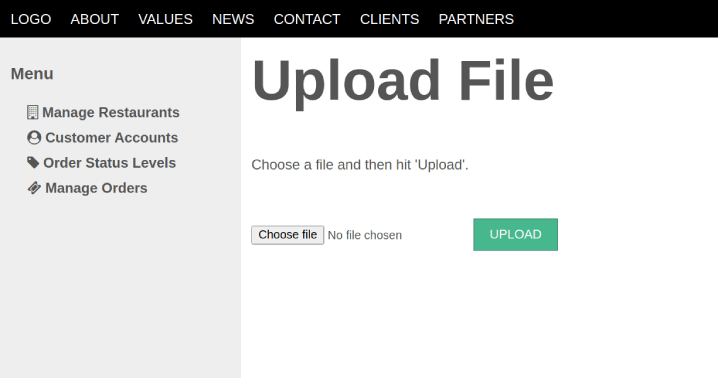

To create a file uploader form with the Trongate framework, we first need to build a method in a controller that will output the form. The method can be named anything, but it is generally recommended to use a name that reflects the purpose of the method, such as 'upload'. For example:
function upload() {
$this->module("trongate_security");
$this->trongate_security->_make_sure_allowed();
$data["form_location"] = str_replace("/upload", "/submit_upload", current_url());
$data["view_file"] = "upload";
$this->template("admin", $data);
}In the example above, we're using the trongate_security module to ensure that only users with the role of 'admin' can access the uploader form. We're then declaring a form location by performing a string replace on the current URL. This means that if the form is displayed on http://localhost/demo/users/upload/88, the form location will be http://localhost/demo/users/submit_upload/88.
Finally, we're passing an instruction to load a page containing a view file called 'upload'. The view file will contain the actual form code, which is similar to an ordinary HTML form, but with two key differences:
The code for the view file might look something like this:
<h1>Upload File</h1>
<p>Choose a file and then hit "Upload".</p>
<?php
validation_errors();
echo form_open_upload($form_location);
echo form_file_select("my_file");
echo form_submit("submit", "Upload");
echo form_close();
The view file is similar to an ordinary HTML form but it uses Trongate specific functions such as 'form_open_upload()' to create the opening form tag and 'form_file_select()' to create the file input field.
Below is a screenshot, showing our uploader form within the context of an 'admin' template:
